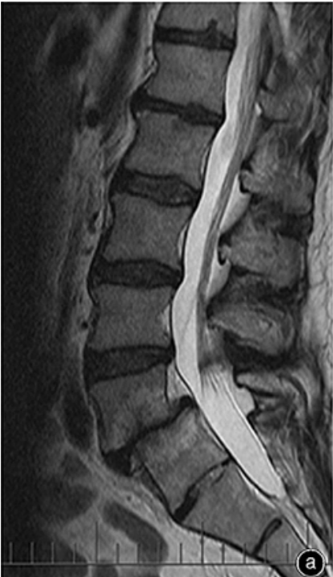
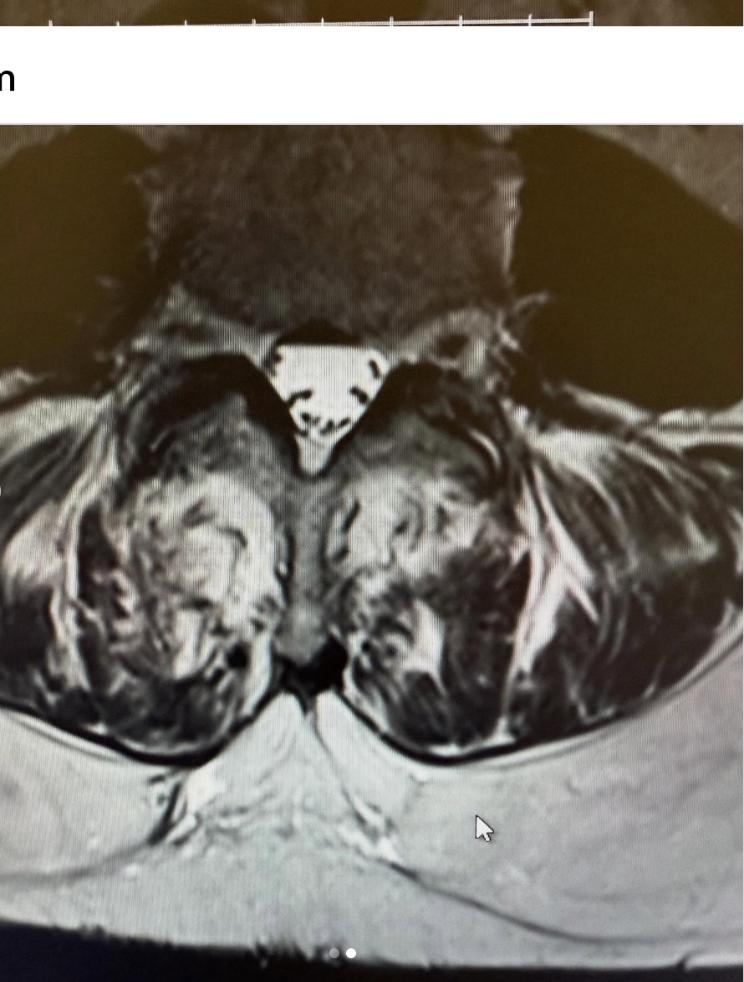

FFPMRCA mock 2 · SOE 1
Instructions to candidate
Case history
A 35-year-old woman attends the chronic pain clinic with chronic low back pain.
The pain started 16 years ago after a fall in her garden. She was seen in the emergency department and discharged with simple analgesia and advice to keep active.
The pain improved slightly but has never gone away. She now describes a constant, severe, dull pain in her back that can make her back "lock up", leaving her in severe agony.
She gets sharp, electric pains down the right thigh to the knee, and sometimes on the left. Sitting or standing for long periods makes it worse, and bending is impossible.
She has seen a chiropractor and tried massage; both helped for a couple of days before the pain returned. Her GP started morphine: she now takes Zomorph 30 mg twice daily and Oramorph for flares.
For the last 2 years she has also had ongoing severe abdominal pain that fluctuates in intensity and causes her a lot of distress. Her GP has excluded coeliac disease, and an OGD and laparoscopy were both normal.
Her past medical history includes obesity (BMI 42) and polycystic ovary syndrome. She was seen in the lumbar spine pathway 6 months ago and had an MRI (images below).
Her mobility has deteriorated: she uses a crutch indoors and a mobility scooter outside.
She works as an accountant but often takes sick leave because of flare-ups. Her employer has not been understanding and has refused to modify her duties. She feels anxious about her future and feels there is no life for her, as she struggles to socialise or do anything that brings her joy. She spends most of the day watching TV and sleeps only a few hours, on the couch.
She says she feels depressed and has occasionally felt hopeless. She smokes cannabis to help her symptoms but does not drink alcohol.


FFPMRCA mock 2 · SOE 1
Station timing
| Part | Topic |
|---|---|
| Long case | Chronic low back pain, chronic abdominal pain, opioids, mood and work |
| SCQ 1 | Lateral femoral cutaneous nerve and meralgia paraesthetica |
| SCQ 2 | Cannabinoids |
| SCQ 3 | NSAIDs |
How to use this pack
Global score for each part
At the end of the long case and of each short clinical question, give one overall score:
Part 1 · 21 minutes
Key knowledge
| Problem | Detail |
|---|---|
| Background | 35-year-old woman, BMI 42, polycystic ovary syndrome |
| Back pain | 16 years after a fall; intermittent electric pain to the thighs (not below the knee); episodes of the back "locking" |
| MRI | Degenerative changes: spondylolisthesis, disc bulges, Modic changes, multifidus changes; no nerve root compression |
| Abdominal pain | Two years, normal investigations: possible visceral hypersensitivity or chronic primary visceral pain |
| Psychosocial | Depression, anxiety, hopelessness, social isolation, poor sleep, threatened employment with an unsupportive employer |
| Drugs | Regular opioids (Zomorph 30 mg twice daily plus Oramorph) without clear benefit; cannabis use |
Key knowledge
| Category | Detail |
|---|---|
| Non-specific | Mechanical low back pain |
| Possible pain generators | Facet joint, discogenic, vertebrogenic (Modic type 1 or 2 endplate change), instability from spondylolisthesis, sacroiliac joint, myofascial; hip pathology |
| Leg pain | Pain to the knee without root compression fits somatic referred pain better than radicular pain |
| Exclude | Inflammatory axial spondyloarthritis (young; morning stiffness over 30 minutes; better with exercise), infection, malignancy, fracture |
| Nociplastic | Long duration, widespread distress and multiple pain sites suggest central sensitisation |
Key knowledge
| Pain | Detail |
|---|---|
| Back | Nociceptive musculoskeletal pain (possible facet, disc, endplate and instability components) |
| Leg | Somatic referred pain (deep, poorly localised, not dermatomal) rather than radicular pain (lancinating, dermatomal, below the knee). No root compression on MRI, so neuropathic pain is less likely |
| Abdomen | Chronic primary visceral pain (functional abdominal pain), or abdominal wall pain such as anterior cutaneous nerve entrapment (check Carnett's sign) |
| Drug-related | Opioid-induced hyperalgesia; narcotic bowel syndrome (abdominal pain worsening with escalating opioids); cannabinoid hyperemesis syndrome |
| Overall | Nociplastic features |
Key knowledge
| Feature | What to look for |
|---|---|
| Sequence | T2-weighted: CSF in the thecal sac is bright |
| Alignment | Low-grade anterolisthesis in the lower lumbar spine |
| Discs | Loss of T2 signal ("dark", desiccated discs) and loss of height at the lower lumbar levels; bulges or protrusion on the axial image |
| Endplates | Modic signal change adjacent to degenerate discs |
| Canal and roots | No significant nerve root compression |
| Paraspinal muscles | Multifidus atrophy with bright fatty infiltration on the axial image, consistent with multifidus dysfunction |
Examiner note: credit a systematic approach: sequence and plane, level, alignment, discs, endplates, canal and foramina, then paraspinal muscles.
Key knowledge
| Meyerding grade | Slip (% of the vertebral body width below) |
|---|---|
| I | under 25% |
| II | 25–50% |
| III | 50–75% |
| IV | 75–100% |
| V | Spondyloptosis (complete slip) |
| Wiltse type (cause) | Detail |
|---|---|
| Dysplastic (congenital) | Rare. Abnormal formation of the facets or upper sacrum, present from birth |
| Isthmic | Defect or stress fracture of the pars interarticularis (spondylolysis); common in adolescents and young athletes |
| Degenerative | Most common. Facet arthritis and disc degeneration in older adults, usually at L4/5 |
| Traumatic | Acute fracture of the posterior elements other than the pars |
| Pathological | Weakened bone from tumour, infection or severe osteoporosis |
A sixth, iatrogenic (post-surgical) type follows decompression that removes stabilising structures.
Key knowledge
| Radicular pain | Somatic referred pain | |
|---|---|---|
| Mechanism | Ectopic discharge from an inflamed or compressed nerve root | Convergence in the dorsal horn of input from facets, disc, sacroiliac joint or muscle |
| Quality | Shooting, lancinating, band-like | Deep, dull, aching, poorly localised |
| Distribution | Dermatomal, often below the knee | Buttock and thigh, rarely below the knee |
| Examination | May have dermatomal sensory loss, weakness, reflex change, positive straight leg raise | Normal neurology |
Radiculopathy is the objective neurological loss. In her: thigh pain to the knee, varying sides, no root compression on MRI, so somatic referred pain is more likely.
Key knowledge
| Detail | |
|---|---|
| History | Site, character, radiation, aggravating and relieving factors, flares; effect on function, work, sleep, mood and relationships; beliefs and expectations; previous treatments; medication, cannabis and alcohol; flags |
| Examination | Gait and mobility, spinal range of movement, palpation, straight leg raise and femoral stretch, full lower limb neurology, sacroiliac joint provocation tests, hip examination, abdominal examination including Carnett's sign, BMI |
| Questionnaires | Oswestry Disability Index, Brief Pain Inventory, PHQ-9, GAD-7, Pain Self-Efficacy Questionnaire, Pain Catastrophising Scale, Tampa Scale of Kinesiophobia |
Key knowledge
STarT Back Screening Tool: 9 items, including a 5-item psychosocial subscale (fear, worry, catastrophising, low mood, bothersomeness). NICE NG59: consider it at first contact for each new episode of low back pain, to inform shared decisions.
| Risk | Score | Matched care |
|---|---|---|
| Low | Total 0–3 | Advice and self-management |
| Medium | Total 4 or more, psychosocial subscale 3 or less | Physiotherapy |
| High | Psychosocial subscale 4 or more | Psychologically informed physiotherapy, or combined physical and psychological approach |
Key knowledge
| Flag | Meaning and examples | In her |
|---|---|---|
| Red | Serious pathology: cauda equina (saddle anaesthesia, bladder or bowel dysfunction, bilateral sciatica, sexual dysfunction); malignancy (history of cancer, weight loss, night pain); infection (fever, immunosuppression, IV drug use); fracture (trauma, osteoporosis, steroids); progressive neurological deficit | None reported |
| Yellow | Psychosocial predictors of chronicity: belief that pain is harmful, fear-avoidance, catastrophising, low mood, passive coping, reliance on passive treatments | Depression, anxiety, hopelessness, avoidance, reliance on chiropractic and massage |
| Blue | Perceptions about work: unsupportive workplace, belief that work is harmful | Unsupportive employer, frequent sick leave |
| Black | System or organisational factors: employer policies, compensation, sickness systems | Employer refusing adjustments |
| Orange | Psychiatric disorder | Consider with depression and hopelessness |
Key knowledge
Degenerative cascade: loss of disc height loads the facet joints (osteoarthritis), the ligamentum flavum thickens and osteophytes form, leading to stenosis and degenerative spondylolisthesis. Endplate damage leads to Modic changes.
Key knowledge
Modic changes are signal changes in the vertebral endplate and adjacent bone marrow on MRI, usually with degenerative disc disease.
| Type | Pathology | T1 | T2 | Note |
|---|---|---|---|---|
| 1 | Marrow oedema, inflammation | Dark | Bright | Most strongly linked with low back pain; can convert to type 2 |
| 2 | Fatty marrow replacement | Bright | Bright | More stable |
| 3 | Subchondral sclerosis | Dark | Dark | End stage |
Key knowledge
Key knowledge
| Oxford league table (acute postoperative pain, at least 50% relief) | NNT |
|---|---|
| Paracetamol 1 g | ≈ 3.6–3.8 |
| Ibuprofen 400 mg | ≈ 2.5 |
| Ibuprofen 200 mg + paracetamol 500 mg | ≈ 1.6 |
| Ibuprofen 400 mg + paracetamol 1 g | ≈ 1.5 |
Key knowledge
| NICE NG59 | Detail |
|---|---|
| Do not offer | TENS, interferential therapy, ultrasound, traction, belts, corsets or orthotics |
| Offer | Exercise, such as a group exercise programme (biomechanical, aerobic, mind–body) |
| Consider | Manual therapy (manipulation, mobilisation, massage) only as part of a package including exercise, which explains why chiropractic and massage alone gave only brief relief |
| Consider | Combined physical and psychological programme (CBT-informed) for significant psychosocial obstacles; weight management |
Key knowledge
| Intervention | When |
|---|---|
| RF denervation | NICE NG59: if the main source is thought to be the facet joints, pain is moderate to severe (5 or more out of 10) and a diagnostic medial branch block is positive. Do not offer spinal injections |
| Restorative neurostimulation | Implanted medial branch stimulation to activate multifidus (such as ReActiv8) for refractory mechanical low back pain with multifidus dysfunction |
| Basivertebral nerve ablation | Vertebrogenic pain with Modic type 1 or 2 changes |
| Spinal surgery | Opinion only if instability or progressive slip. NICE advises against spinal fusion except within a randomised trial |
Examiner note: credit candidates who say interventions are likely to fail unless mood, opioids and cannabis are addressed first.
Key knowledge
Key knowledge
| Effect | Detail |
|---|---|
| Mechanical | Increased spinal and joint load; accelerated disc and facet degeneration |
| Inflammatory | Adipokines (such as leptin, IL-6, TNF-α) promote low-grade systemic inflammation and sensitisation |
| Function and mood | Worsens deconditioning, sleep (obstructive sleep apnoea) and mood |
| Treatment risk | Positioning, imaging quality and sedation risk for procedures and surgery; opioid respiratory risk |
Key knowledge
| Cause | Features |
|---|---|
| Chronic primary visceral pain (ICD-11) | After normal investigations: irritable bowel syndrome or centrally mediated abdominal pain syndrome (Rome IV) |
| Narcotic bowel syndrome | Paradoxical worsening of abdominal pain with continued or escalating opioids; improves with opioid withdrawal |
| Cannabinoid hyperemesis syndrome | Cyclical nausea, vomiting and abdominal pain, relieved by hot showers |
| Abdominal wall pain | Anterior cutaneous nerve entrapment: positive Carnett's sign |
Key knowledge
| Detail | |
|---|---|
| Her risk factors | Depression, anxiety, hopelessness, social isolation, sleep disturbance, threatened employment and finances, chronic pain, access to opioids, cannabis use |
| Protective factors | Family, reasons for living, engagement with services |
Chronic pain roughly doubles the risk of death by suicide.
Key knowledge
| Domain | Risk factors |
|---|---|
| Pain-related | Pain intensity and type, sleep disturbance, pain catastrophising, opioid use |
| Sociodemographic | Male sex, LGBT, ethnic minority; stressful life events (job loss, relationship instability); lack of social support |
| Personal background | Substance misuse; bereavement by suicide or exposure to others' suicidal behaviour; suicide-promoting websites or social media; access to lethal means |
| Psychological | Previous self-harm or suicide attempt; mental illness (especially recent relapse or discharge from inpatient care); impulsivity or personality disorder; disengagement from services; hopelessness, helplessness, guilt; entrapment or shame; psychotic phenomena |
The risk of death by suicide is about twice as high in people with chronic pain.
Key knowledge
| Situation | Action |
|---|---|
| Immediate risk | Do not leave her alone; urgent referral to the crisis or liaison mental health team |
| Otherwise | Collaborative safety plan; reduce access to means (limited opioid supplies); inform the GP; refer to NHS Talking Therapies or psychology; document and communicate |
Key knowledge
Part 2 · 3 × 7 minutes
About 7 minutes each. If the candidate finishes early, you may move on to the next question.
Key knowledge
Relations: lateral to the femoral nerve and deep circumflex iliac vessels in the pelvis; superficial and close to the origin of sartorius in the thigh.
Key knowledge
| Type | % | Anatomical route (Aszmann classification) |
|---|---|---|
| A | 4 | Posterior to the ASIS, across the iliac crest |
| B | 27 | Anterior to the ASIS and superficial to the origin of sartorius, within the substance of the inguinal ligament |
| C | 23 | Medial to the ASIS, ensheathed in the tendinous origin of sartorius |
| D | 26 | Medial to the origin of sartorius, between the sartorius tendon and the thick iliopsoas fascia, deep to the inguinal ligament |
| E | 20 | Most medial, in loose connective tissue deep to the inguinal ligament over the thin iliopsoas fascia, contributing to the femoral branch of the genitofemoral nerve |
Key knowledge
Key knowledge
Meralgia paraesthetica (Bernhardt–Roth syndrome).
| Risk factor | Examples |
|---|---|
| Mechanical | Obesity, pregnancy, tight belts, waistbands, tool belts or body armour; prolonged standing or hip extension; leg length discrepancy; seatbelt injury |
| Metabolic | Diabetes, hypothyroidism, alcohol |
| Iatrogenic | Iliac crest bone graft harvest, anterior approach hip surgery, laparoscopic hernia repair or other pelvic surgery, prolonged prone or lithotomy positioning |
Key knowledge
| Detail | |
|---|---|
| Symptoms | Burning, tingling, numbness or hypersensitivity of the anterolateral thigh; may be bilateral |
| Aggravating / relieving | Worse with standing, walking, hip extension or tight clothing; eased by sitting |
| Examination | Sensory change in the nerve distribution; tenderness or Tinel's sign medial to the ASIS; positive pelvic compression test. No weakness, normal reflexes |
| Differentials | L2/L3 radiculopathy, femoral neuropathy, hip pathology, greater trochanteric pain syndrome, pelvic mass |
Key knowledge
Key knowledge
Key knowledge
Key knowledge
| Step | Options |
|---|---|
| Conservative | Weight loss, avoid tight belts and clothing, topical lidocaine, anti-neuropathic medication. Most cases resolve spontaneously |
| Interventional | Repeat ultrasound-guided block with steroid; pulsed RF; cryoneurolysis |
| Neuromodulation | Peripheral nerve stimulation for refractory cases |
| Surgical | Decompression (neurolysis) preserves sensation but may recur; neurectomy gives more reliable relief but permanent numbness of the anterolateral thigh |
Key knowledge
Both are Gi/o GPCRs: inhibit adenylyl cyclase, open K⁺ channels and close voltage-gated Ca²⁺ channels.
| CB1 | CB2 | |
|---|---|---|
| Site | Very abundant in the CNS: basal ganglia, cerebellum, hippocampus, cortex, PAG, RVM, dorsal horn; peripheral nociceptor terminals. Mainly presynaptic | Mainly immune cells, spleen and microglia (upregulated in inflammation and neuropathic pain); low levels in neurones |
| Effects | Psychoactive and analgesic | Anti-inflammatory; not psychoactive |
Other targets include GPR55, TRPV1 and PPARs.
Key knowledge
| Endocannabinoid | Broken down by |
|---|---|
| Anandamide (AEA) | Fatty acid amide hydrolase (FAAH) |
| 2-arachidonoylglycerol (2-AG) | Monoacylglycerol lipase (MAGL) |
Key knowledge
| Product | Licensed use (UK) |
|---|---|
| Nabiximols (Sativex, THC:CBD spray) | Spasticity in multiple sclerosis |
| Nabilone (synthetic THC analogue) | Chemotherapy-induced nausea and vomiting |
| Dronabinol (synthetic THC) | Not licensed in the UK |
| Cannabidiol (Epidyolex) | Seizures in Dravet syndrome, Lennox–Gastaut syndrome and tuberous sclerosis complex |
Experimental: FAAH inhibitors (a phase 1 trial of BIA 10-2474 caused a death), peripherally restricted CB1 agonists, selective CB2 agonists.
Paracetamol also acts on descending serotonergic pathways and the peroxidase site of COX.
Key knowledge
| THC (Δ9-tetrahydrocannabinol) | CBD (cannabidiol) | |
|---|---|---|
| Receptor action | Partial agonist at CB1 and CB2 | Low affinity for CB1 and CB2 (negative allosteric modulator of CB1); acts at 5-HT1A, TRPV1, GPR55 and adenosine reuptake |
| Psychoactive | Yes | No |
| Effects | Analgesia, euphoria, sedation, appetite; psychosis risk | Anticonvulsant, anxiolytic; may reduce some THC adverse effects |
| Interactions | Additive sedation | Inhibits CYP3A4 and CYP2C19 (clobazam, warfarin); can raise liver enzymes. Over-the-counter products vary in content |
Key knowledge
| Cochrane (Mücke, 2018) | Value |
|---|---|
| NNT for 50% pain relief | ≈ 20 |
| NNH (withdrawal due to adverse effects) | ≈ 25 |
| Evidence quality | Low |
Key knowledge
| NICE-supported indication | Product |
|---|---|
| Moderate to severe MS spasticity | 4-week trial of Sativex |
| Persistent chemotherapy-induced nausea and vomiting | Nabilone as an add-on |
| Dravet and Lennox–Gastaut syndromes | Cannabidiol |
Chronic primary pain (such as fibromyalgia): evidence is weak and low quality, with small effects and frequent adverse effects. NICE does not recommend it, and the IASP does not endorse general use for pain.
Key knowledge
| System | Adverse effects |
|---|---|
| CNS | Sedation, dizziness, impaired memory, concentration and coordination; anxiety or paranoia; low mood |
| Psychiatric | Psychosis (especially high-THC products and in adolescents); cannabis use disorder (about 1 in 10 users); withdrawal (irritability, insomnia) |
| GI | Cannabinoid hyperemesis syndrome: cyclical vomiting and abdominal pain relieved by hot showers |
| Cardiorespiratory | Tachycardia, postural hypotension; respiratory harm, tar and carcinogens when smoked |
| Interactions | CBD via CYP3A4 and CYP2C19 (such as clobazam); additive sedation with opioids and gabapentinoids |
| Driving | THC has a specified limit of 2 µg/L under drug-driving law |
| Edibles | Delayed onset, so risk of accidental overdose and toxicity in children |
Key knowledge
Analgesic, anti-inflammatory and antipyretic, acting peripherally and centrally (spinal COX-2).
| Detail | |
|---|---|
| COX-1 | Constitutive: gastric mucosa, platelets, kidney |
| COX-2 | Inducible in inflammation; also constitutive in kidney and endothelium |
| GI | Loss of prostaglandin-mediated mucus and bicarbonate secretion and mucosal blood flow: dyspepsia, ulcers, bleeding |
| Renal | Prostaglandins keep the afferent arteriole dilated when perfusion falls. NSAIDs cause AKI (especially with hypovolaemia, ACE inhibitors or ARBs, and diuretics), sodium and water retention, hyperkalaemia, hypertension |
| Bleeding | Platelet COX-1 inhibition reduces thromboxane A2, impairing aggregation (irreversible with aspirin) |
| Respiratory | NSAID-exacerbated respiratory disease from shunting of arachidonic acid to leukotrienes |
Key knowledge
| Detail | |
|---|---|
| Examples | Celecoxib, etoricoxib, parecoxib (IV) |
| Benefits | Fewer GI ulcers and bleeds; no effect on platelet function (useful perioperatively); usually tolerated in NSAID-exacerbated respiratory disease |
| No advantage | Renal effects similar to other NSAIDs |
| Contraindicated | Established ischaemic heart disease, cerebrovascular disease, peripheral arterial disease, moderate to severe heart failure; etoricoxib also in uncontrolled hypertension. Avoid after CABG |
| Why | Reduced endothelial prostacyclin with unopposed platelet thromboxane raises thrombotic risk |
Key knowledge
| Profile | Detail |
|---|---|
| Best | Naproxen (up to 1000 mg/day) and low-dose ibuprofen (up to 1200 mg/day) |
| Worst | Diclofenac and COX-2 inhibitors raise major vascular events by about a third. Diclofenac is contraindicated in established cardiovascular disease (MHRA, 2013), like COX-2 inhibitors. High-dose ibuprofen (2400 mg/day) carries similar risk |
| PRECISION trial | Celecoxib was non-inferior to naproxen and ibuprofen for cardiovascular events at moderate doses |
Key knowledge
| Oxford league table (acute postoperative pain, at least 50% relief) | NNT |
|---|---|
| Ibuprofen 400 mg + paracetamol 1 g | ≈ 1.5 |
| Etoricoxib 120 mg | ≈ 1.9 |
| Ibuprofen 400 mg | ≈ 2.5 |
| Naproxen 500 mg | ≈ 2.7 |
| Diclofenac 50 mg | ≈ 2.7 |
NNH for serious GI harm: with at least 2 months of regular NSAID use, about 1 in 1,200 people dies from gastroduodenal complications (Tramèr et al., 2000).
Key knowledge
Key knowledge
| Detail | |
|---|---|
| Routes | Oral, topical, rectal, intravenous |
| Formulations | Ibuprofen suspension 100 mg/5 ml (from 3 months or over 5 kg); a 200 mg/5 ml strength is also available |
| Dose | 5 mg/kg four times daily or 10 mg/kg three times daily; maximum 30 mg/kg/day |
| Contraindications | Aspirin under 16 (Reye's syndrome). Avoid ibuprofen in dehydration (AKI risk) and in chickenpox (risk of severe skin infection); caution in NSAID-sensitive asthma |
Key knowledge
| Detail | |
|---|---|
| Medical | Hypersensitivity or NSAID-exacerbated respiratory disease; active peptic ulcer or GI bleeding; severe heart failure; severe renal or hepatic impairment; coagulopathy or anticoagulation (caution); dehydration |
| Pregnancy | Avoid, especially from 20 weeks (oligohydramnios) and in the third trimester (premature closure of the ductus arteriosus) |
| Surgical | High bleeding-risk procedures (neurosurgery, some ENT and plastic surgery); major haemorrhage or hypovolaemia; high AKI risk (major vascular surgery, nephrotoxins, ACE inhibitors); after CABG (COX-2 inhibitors contraindicated). Concerns about bone healing after spinal fusion or fracture, and anastomotic leak after colorectal surgery (conflicting evidence) |